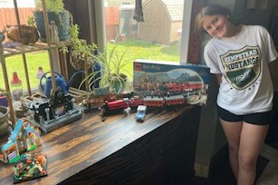
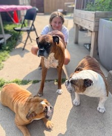
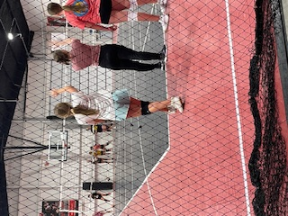

Lyla's Lego Sets
Lyla likes to spend her free time building Lego sets. She is really into the Harry Potter series right now. Pictured are her finished Lego sets which includes the Harry Potter Train set, the Wednesday Adams dorm room set, a Lego Friends set, and a Lego Snail set. Sometimes you can get free sets from the Lego store when you have enough points built up!
Lyla's Dogs
This is Lyla with her 3 dogs Lola, Frazier and Chewy. She loves them so much and does a lot to help out with them. She likes to feed them and play with them on her trampoline.
Lyla Playing Volleyball
This is lyla at volleyball tryouts. She is awaiting to hear is she will make the team for traveling volleyball on a team called "Blaze". They are a competive team for ages ranging 11 to 16. She is really good at playing volleyball and is very dedicated to her training. Her hope is to become a defense specalist. Cross your fingers that she makes it!
Volleyball Positions
The following are positions on the volleyball court that the players can specalize in.
- Libero
- The Libero is a defensive specalist. They are ususally the first person to hit the ball after it is put into play from a serve.This person only plays defense and usually wears a different color jersey.The Libero only plays the back row and gets taken out of the game when it's their turn to rotate to the front.
- Setter
- The Setter is usually the second person to touch the ball after the Libero. They set up the play for a person to spike or get the ball back over the net
- Outside Hitter
- This person is usually the left side hitter or spiker. They are the third hit after a ball is in play and try to get the ball over the net.
- Defensive Specalist
- This position is similar to the Libero, but can also serve the ball and rotate throughout the whole court.
- Opposite Hitter
- This person plays opposite the setter and is often a stong attacker. The Outside and Opposite hitter is responsilbe for scoring points.
- Middle Blocker
- This person is positioned at the net. They focus on blocking opposing hits and quick attacks
For more information about volleyball positions visit the Volleyball Advisor website.